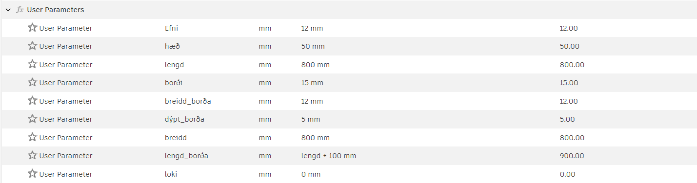
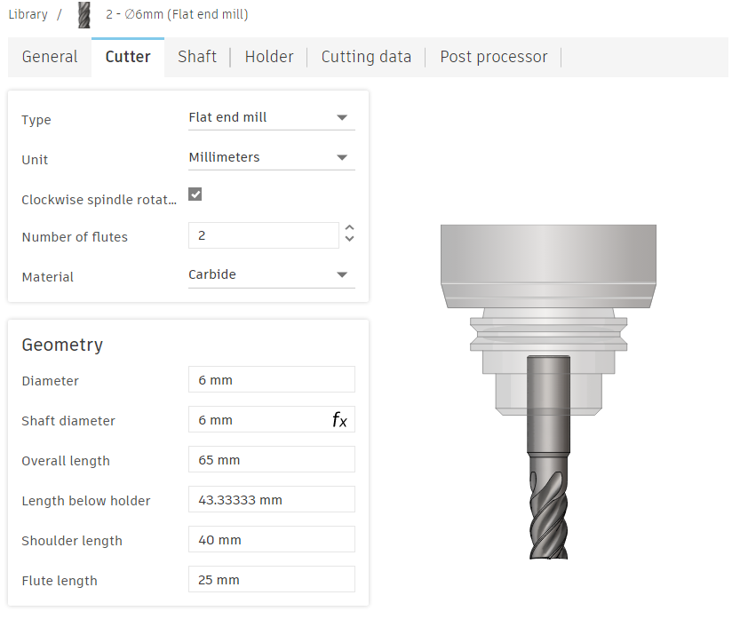
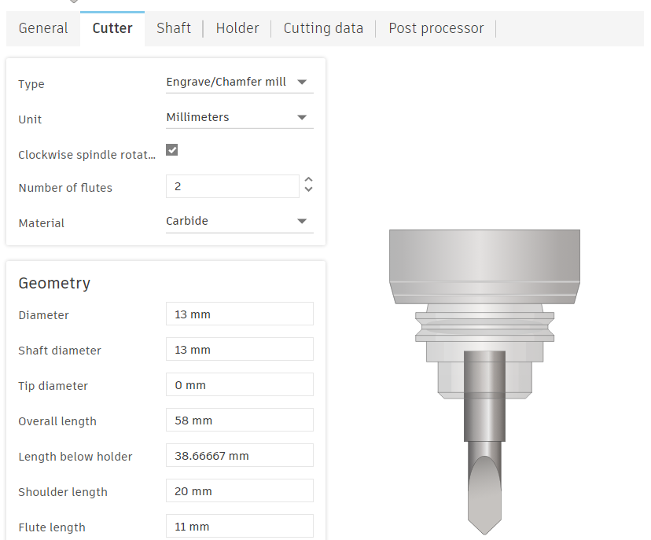
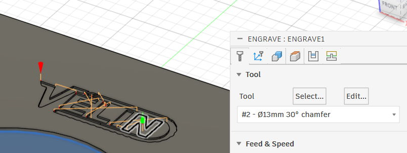
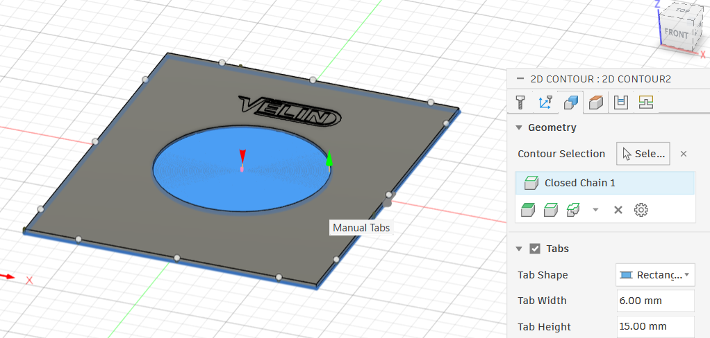
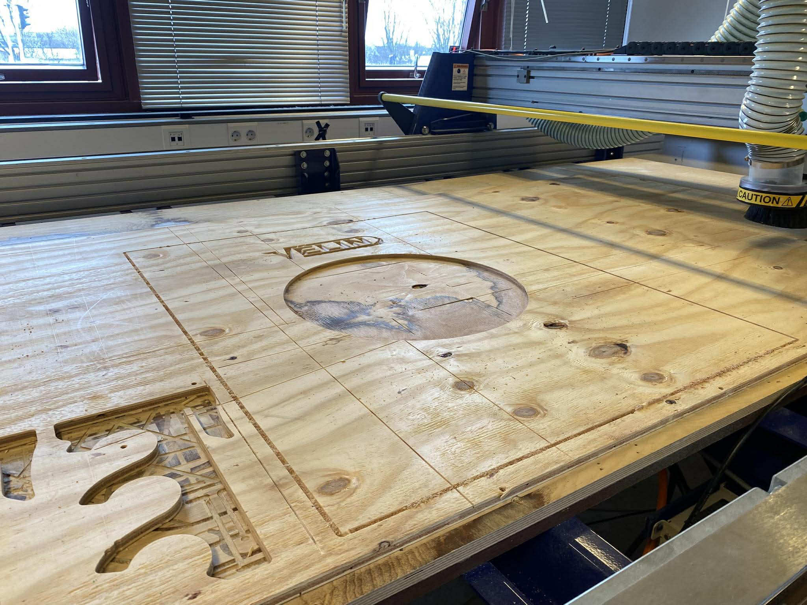
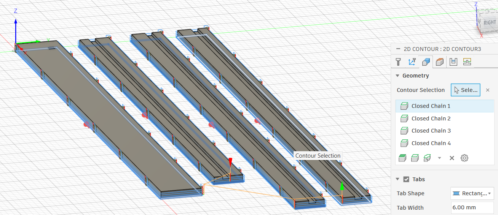
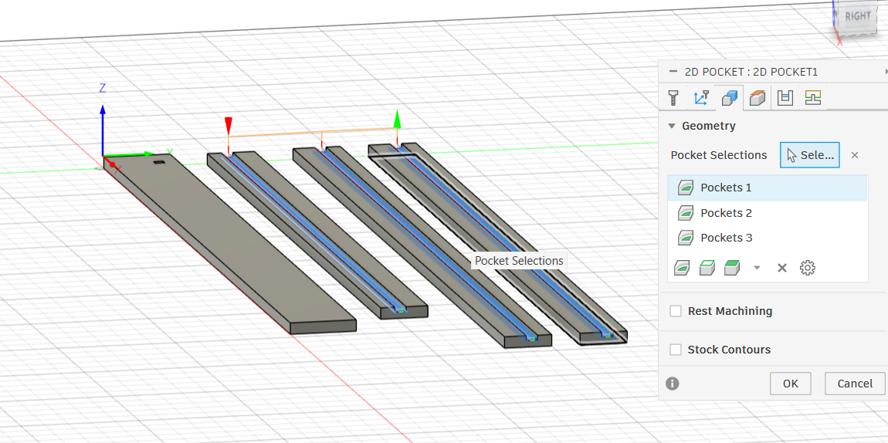

Verkefnalýsing
Verkefnið fólst í hönnun og fræsingu á píluspjaldsvegg með bakplötu,
hillu fyrir pílur og rauf fyrir LED lýsingu. Hönnun var unnin í Fusion 360 og
fræsing framkvæmd með ShopBot fræsivél samkvæmt leið A í verkefnalýsingu.
Markmið verkefnisins var að búa til nothæfa og vel hannaða vöru ásamt því að
skrásetja allt ferlið frá hugmynd að lokaafurð. Verkefnið var unnið af
Breka Hólm Hrafnssyni, Kristófer Valgarði og Svavari Dúa Þórðarsyni.
Fyrstu skref og hugmyndarleit
Eftir að hópurinn hafði verið myndaður var ákveðið að allir myndu byrja á að horfa á
myndbönd frá kennara og
skoða verkefni eldri nemenda til að fá betri yfirsýn yfir verkefnið. Að því loknu hittist hópurinn og ræddi saman
um skipulag og mögulegar hugmyndir. Við ákváðum að við vildum vera vel skipulagðir og byrja snemma til að reyna
vera með tveimur fyrstu hópunum í fræsingu. Eftir að hafa lesið verkefnislýsinguna og skoða fyrri verkefni sáum
við að best væri að reyna hanna eitthvað auðvelt og bæta við það, frekar en að reyna eitthvað alltof erfitt sem
myndi bara flækjast endalaust.
Eftir að hafa kastað nokkrum hugmyndum fengum við innblástur frá Skor, þar sem
píluaðstaðan og umgjörðin í kringum píluspjöldin vakti áhuga á okkar, við vildum hanna okkar eigin útgáfu af
píluspjaldsramma með lýsingu og geymslu og enduðum við á því að hanna píluspjaldsramma fyrir nemendafélagið
okkar Vélina. Við skoðuðum ýmsa ramma á netinu og komumst að þeirri niðurstöðu að við vildum gera ramma sem
myndi vera samsettur úr 5 hlutum, bakplötu sem væri með Vélarlogo-ið og síðan væri ramminn sjálfur sem væri úr
4 hlutum. Við vildu líka að ramminn gæti haldið ljósi fyrir ofan spjaldið og gæti geymt pílurnar einhversstaðar
einnig ætti líka að vera stigatafla inn í rammanum en hún var síðar felld út af því að okkur fannst hún ekki vera
nauðsynleg. Með því að gera ramma sáum við að við gátum byrjað á stöðugum grunn og alltaf bætt eitthverjum
skemmtilegum hönnunum við hann. Hér má sjá mynd af fyrstu hugmynd hvernig ramminn ætti að vera:
Skipulag og verkefnastjórnun
Til að vera vel skipulagðir skiptum við verkefninu niður í skýra verkþætti
og settum skilafrest á allt. Notað var
Trello
til að halda utan um verkefnið þar sem við skiptum verkum
niður í lista eftir stöðu. Eftir þetta var ábyrgð skipt á milli hópmeðlima. Svavar sá um hönnun bakplötunnar og
Logo, Breki um ramma fyrir LED ljós og Kristófer um hönnun geymsluhluta fyrir pílur. Við ákváðum að skipta bara
upp verkum í hönnuninni en tókum allir þátt í lykilverkþættum eins og fræsingu, samsetningu og prófunum.
Sett var upp tímalína þar sem hönnunin átti að vera lokið fyrir 8. apríl og framleiðsla fór fram eftir það.
Lokaskráning og kynning var síðan unnin í lok verkefnisins. Þetta skipulag hjálpaði til við að halda utan um
verkefnið og tryggja að það kláraðist á réttum tíma.
Hönnun módels
Við byrjuðum á að skissa hugmyndina á blað til að allir í hópnum gætu séð fyrir sér hvernig lokahönnunin
ætti að líta út. Út frá þeirri skissu þróaðist hugmyndin áfram, meðal annars með því að hafa LED lýsingu
inn í rammanum með LED borða og að láta píluspjaldið fara örlítið ofan í bakplötuna þannig að það stæði
minna út. Einnig ákváðum við að neðsti hluti rammans ætti að standa lengra út en aðrir hlutar. Sá hluti
ætti að vera hannaður sem hilla þar sem gert væri ráð fyrir götum til að geyma pílur á snyrtilegan hátt.
Þegar grunn hugmyndin var komin á hreint ákváðum við helstu hönnunarskilyrði, svo sem stærð rammans,
hversu langt hann stæði út frá vegg og hversu djúpt píluspjaldið ætti að sitja í bakplötunni.
Einnig þurfti að taka tillit til stærðar LED borðans og hvernig best væri að koma götum fyrir
pílurnar Þegar þessar forsendur voru komnar á hreint hófum við hönnun í Fusion360. Við ákváðum
að skipta verkefninu á milli okkar en nota parametríska hönnun þannig að auðvelt væri að breyta
stærðum og stillingum ef þörf krefði.
Bakplata: Svavar
Bakplatan var hönnuð í Fusion 360 með parametrískri nálgun. Markmiðið var að búa til sterka og nákvæma
plötu sem heldur píluspjaldinu á sínum stað og inniheldur einnig rými fyrir aðra íhluti
verkefnisins. Stærð bakplötunnar var skilgreind út frá stærð píluspjaldsins með bilum
frá brúnum sem voru skilgreind með parametrum. Með því að hanna þetta svona var mögulegt
að breyta hönnuninni auðveldlega án þess að endurteikna hana. Í plötunni var fræstur
hringur fyrir píluspjaldið til þess að tryggja að það sitji stöðugt. Á framhlið plötunnar
var fræst logo nemendafélagsins VÉLIN með engraving aðferð til að bæta við persónulegu útliti.
Logoið var flutt inn í Fusion 360 sem SVG skrá og staðsett á bakplötunni.
Toppur og hliðar í ramma: Breki
Toppurinn og hliðarnar á rammanum voru teiknaðar út frá því hvernig bakplatan átti að vera.
Þeir áttu að smella á bakplötuna og voru því háðir stærðinni á henni. Síðan var gert ráð
fyrir ledborða og þá var extrude-að 5 mm niður í öll stykkin svo hann kæmist alveg ofan í.
Í fyrstu hugmyndinni var planið að láta hlutina smella saman í 45 gráðu horni. Eftir að hafa
rætt það við kennarann um hvernig hornið yrði fræst, mælti hann með að sleppa því þar sem það myndi
flækja undirbúning fyrir fræsingu verulega. Þess vegna var hönnuninni breytt þannig að toppurinn situr
ofan á hliðunum. Með þeirri breytingu þurfti aðeins að hanna eina hlið, þar sem hliðarnar væru spegilmyndir
hvor af annarri. Á myndum má sjá parametra fyrir annarsvegar topp og hinsvegar hlið


Hilla: Kristófer
Hillan var hönnuð þannig að hún stæði út fyrir rammann á öllum hliðum og var því stærri en hinir
hlutar rammans. Hugmyndin var að hún myndi ná 30 mm út fyrir báðar hliðar svo væri hægt að setja drykk þar.
Síðan voru líka gerð göt fyrir pílurnar svo þær gætu farið niður í hilluna og staðið upp úr henni.
Í byrjun var hugsað að láta snúruna úr LED-borðanum fara út um bakplötuna, en ákveðið var frekar að
láta hana fara í gegnum hilluna í staðinn. Þá var búið til gat sem var jafn stórt og raufin og á
sama stað, þannig að LED-borðinn gæti farið hringinn í kringum rammann og rafmagnssnúran niður í
gegnum gatið og í síðan í samband.
Loka niðurstaða
Eftir að allir höfðu teiknað sinn hlut voru þeir settir saman í assembly til
að athuga hvort þeir myndu ekki örugglega passa saman. Ákveðið var að sleppa
að hafa stigatöflu þar sem hún kæmist ekki fyrir fallega. Hér má sjá teikningu
af pilluspjaldinu í Fusion:
Fræsing
Í upphafi ætluðum við að fræsa í OSB plötu en leiðbeinandi sagði okkur að áletrunin myndi koma frekar
illa út og því enduðum við á að nota 12 mm plötu úr grenikrossvið sem var einnig sterkbyggðari.
Við notuðum 6 mm flatendafræsibita fyrir megnið af fræsingunni og 13 mm V-fræsibita fyrir áletrunina
(Vélar logo-ið).
Þá fórum við að undirbúa toolpaths fyrir Shopbot fræsinn í Fusion 360. Við gerðum tool fyrir báða fræsibitana
í Fusion. Stillt var á 14000 rpm fyrir “spindle speed” og “cutting feedrate” á 3000 mm/mín fyrir bæði tool
eftir ráðleggingum leiðbeinanda. Við miðuðum við eftirfarandi
myndband
fyrir uppsetningu á toolpaths í Fusion 360


Áður en við fræstum þurftum við að festa plötuna sem við notuðum við vinnuborðið með skrúfum í jöðrunum.
Með aðstoð leiðbeinanda var fræsirinn stilltur í tölvunni m.v. þykkt og staðsetningu plötunnar.
Þá fórum við að fræsa en við þurftum að velja mismunandi stillingar fyrir mismunandi parta.
Fyrir útskurð platna voru notaðir tabs til að halda þeim kyrrum við fræsingu.
á Valið var “Engrave” fyrir áletrunina, 2D Adaptive fyrir hringinn á bakplötunni
til að spara tíma og 2D Contour fyrir restina.


Við byrjuðum á að fræsa áletrunina í bakplötuna. Hún fór næstum alveg í gegn en ætlunin var að hún færi
aðeins nokkra millimetra inn í viðinn. Þetta hefur gerst því við gleymdum að stilla á rétta stillingu
í multiple depths stillingunni og leiðbeinanda yfirsást þetta líka. Þetta hafði þó lítil áhrif og kom
jafnvel betur út því logo-ið er mjög læsilegt og skýrt.


Einnig fræstum við hringinn í bakplötuna en hann fór líka næstum alveg í gegn en núna vegna skemmda í viðnum
og ráka sem höfðu verið skornar hinum megin á plötuna. Þetta breytir þó litlu upp á notagildið þar sem
spjaldið á að sitja ofan á fræsta hringnum. Því var ákveðið að nota plötuna áfram og þá skárum við hana
út með fræsinum.


Síðan fræstum við restina af minni plötunum í einni keyrslu en þá fór fræsirinn alveg í gegn.
Notað var 2D pocket til að fræsa raufarnar í plöturnar og 2D contour fyrir litla snúrugatið og
til að skera út plöturnar að lokum eins og sést á mynd
Aftur höfðu stillingarnar eitthvað farið úrskeiðis en þær vistuðust ekki rétt þegar við fluttum
skrárnar á minnislykli yfir á tölvu hjá leiðbeinanda sem hjálpaði við að vinna post-process stillingar.
Við tókum ekki eftir þessu fyrr en öll fræsingin var búin þar sem við héldum góðri fjarlægð frá fræsivélinni
þegar hún var í gangi. Við gerðum aðra tilraun og hún gekk fullkomlega. Þá vorum við komnir með alla partana
sem þurfti til að setja allt saman.
Samsetning
Eftir að við höfðum fræst alla hlutina út og vorum sáttir með útkomuna,
byrjuðum við á að pússa öll yfirborð sem einhver gæti snert þegar ramminn væri notaður.
Það þurfti líka að pússa aðeins á nokkrum stöðum þar sem fræsingin hafði ekki alveg heppnast fullkomlega,
en mesti tíminnn fór í að pússa tabs-inn. Áður en við gátum sett ramman saman þurftum við líka að bora
sex göt í hilluna þar sem pílurnar áttu að fara niður í. Þegar það var komið byrjuðum við að setja ramman saman.
Við byrjuðum á að merkja fyrir götunum og boruðum síðan fyrir skrúfunum í bakplötuna. Þá gátum við sett ramman á
og skrúfan hann við bakplötuna. Það gekk frekar vel en við vor
Yfirlit yfir verkefni
Okkur fannst þetta mjög skemmtilegt verkefni og við vorum virkilega sátt með niðurstöðuna,
sérstaklega miðað við að þetta var fyrsta prótótýpan. Það sem við vorum kannski ánægðastir með var hvað við
vorum skipulagðir og unnum vel. Við náðum fyrsti hópurinn til að klára að fræsa alla hlutina og vorum því vel
á undan áætlun. Auðvitað fóru samt einhverjir hlutir aðeins úrskeiðis hjá okkur. Til dæmis gleymdum við að
breyta gatinu fyrir snúruna þegar við stækkuðum raufina fyrir LED-borðann, þannig að það pass ekki alveg eins
vel saman og við höfðum gert ráð fyrir. En fyrir utan það kom þetta nákvæmlega eins út og við höfðum ætlað okkur.
Það væri mjög gaman að sjá hvernig þetta myndi líta út uppi á vegg með ljósi og spjaldi í. Við værum líka alveg til
í að prófa að gera þetta aftur úr flottara efni og þróa hönnunina aðeins meira.
Í verkefninu lærðum við hvað það er mikilvægt að skipuleggja hönnun með tilliti til framleiðslu og að prófa lausnir
í áföngum. Einnig sáum við hversu mikilvægt er að fara vel yfir stillingar áður en fræsing hefst.
Gagnabanki
Hér er hægt að finna helstu hönnunarskjöl sem ég gerði fyrir verkefnið:
Thingiverse